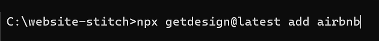
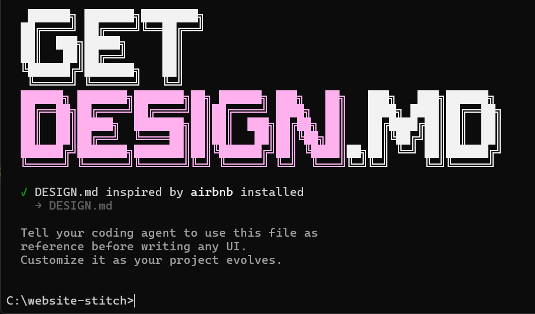
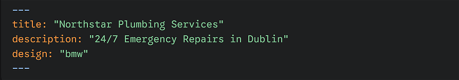

Introduction
In this project you will generate a single-page website for a small business or organisation using Google Stitch. Each is assigned a unique combination of a business use case and a specific design system from the getdesign.md online library.
You will use your assigned design.md file as a starting point to structure your content and styling.
Business use cases
Here are five typical small business/organisation use cases:
Local service provider: Northstar Plumbing Services. Focus on trust, reliability, and emergency contact details.
Primary objective: Lead generation and trust-building.
Required sections:
- Hero section: A bold heading and a "Call Now" button.
- Services list: A bulleted list of at least 5 services (e.g., Pipe Repair, Emergency Callouts).
- Trust signals: A blockquote containing a customer testimonial.
- Contact: A clear "Service Area" section listing local neighborhoods.
Artisan maker: Lunar Cycle Pottery. Focus on high-quality visuals, product galleries, and the maker’s story.
Primary objective: Visual branding and portfolio display.
Required sections:
- Visual Gallery: At least 3 high-quality placeholder images of "products."
- The Process: A numbered list (1-4) explaining how the pottery is made.
- Artist Bio: A short "About the Maker" section with a distinctive font style.
- Social Footer: Links to Instagram/Pinterest (using Markdown link syntax).
Professional consultant: Apex Digital Marketing. Focus on authority, clear pricing tiers, and service packages.
Primary objective: Demonstrating expertise and clear pricing.
Required sections:
- Value proposition: A concise H2 header explaining what they solve.
- Pricing table: A Markdown table comparing three tiers (e.g., Basic, Pro, Enterprise).
- Expertise: A section using bolding and italics to highlight key industry stats.
- CTA: A "Schedule a Discovery Call" button linking to a calendar (placeholder).
Community non-Profit: The Green Haven Garden. Focus on mission statements, volunteer sign-ups, and events.
Required sections:
- Mission Statement: A highlighted (blockquoted) statement of intent.
- Event Calendar: A list or table showing the next three garden meetups.
- Volunteer Form: A section outlining the "3 Steps to Join" using a numbered list.
- Location: An embedded map link or a clear text-based address description.
Boutique fitness: Iron & Zen Yoga Studio. Focus on class schedules, energy, and instructor profiles.
Primary Objective: Ease of booking and lifestyle appeal.
Required sections:
- Weekly schedule: A comprehensive Markdown table (Days vs. Class Times).
- Instructor profiles: Small sections for each teacher with a brief bio.
- Promo offer: An H3 header with a "First Class Free" callout.
- FAQ: A section using bolded questions and plain-text answers.
design.md system mapping
For your CA5 assignment, you will be assigned one of the above five use cases along with a brand-specific file from getdesign.md to ensure a professional aesthetic:
| Use case | design.md file | Aesthetic goal |
|---|---|---|
| Service Provider | BMW | Precision and reliability. |
| Artisan Maker | Airbnb | Warm, photo-centric UI. |
| Consultant | Apple | Premium white space. |
| Non-Profit | Claude | Clean editorial layout. |
| Fitness Studio | Binance | High-energy monochrome. |
Sourcing your design.md markdown file
Follow these steps:
- Make a folder on your computer to store this project. For example, /website-stitch
- Visit getdesign.md and click the Sign in button.
- On the next screen, click Continue with Github, and allow permission. When finished, click Browse designs.
- Locate your assigned brand (e.g., Airbnb, BMW, or Apple).
- In a terminal window, change to the folder you want to use for your project, and run the npx install command.

- You may be asked to install the necessary dependencies. Click Y to continue.
- Your project folder now contains the relevant design.md file.

Launching Stitch and loading your design.md file
Follow these steps:
- Navigate to stitch.withgoogle.com and sign in with your Google account.
- Click on Create New Project or + New Site.
Stitch will typically create a default file structure for you. Look for the file explorer on the left-hand side of the Stitch interface.
If a file named design.md already exists, click it to open the editor. If not, click the + (Plus) icon to create a new file and name it design.md.
Now, do the following:
- Open your downloaded design.md file in VS Code or a text editor.
- Select and copy all the text.
- Return to the Google Stitch editor, select the design.md file, and paste the content in, overwriting any existing text.
Configure the YAML front matter
In the context of Google Stitch and design.md, the YAML front matter is a block of configuration code located at the very top of your Markdown file. It is used to define "metadata"—information about the page that isn't necessarily part of the visible body text, such as the page title, description, or specific design settings.
At the very top of the Stitch editor window, locate the section between the --- dashes.
Update the title and description to match your assigned business name.
See the example below:

Ensure there are no spaces before the dashes (---) at the start of the file, or Google Stitch may fail to render the design correctly.
Click the Preview button in the top right corner.
You should see the layout immediately transform to match the assigned brand's aesthetic (e.g., BMW's dark themes or Airbnb's rounded UI).
Click Save or Publish to generate your live URL.
NOTE: The design.md file is the "brain" of your website. Google Stitch looks at this file specifically to decide how to colour your buttons, what fonts to use, and where to place your images. If you delete this file or rename it, your website will lose its styling!
Generating the content
Once your design.md file is configured, you can use the Stitch AI assistant to populate the site. Because you have already updated the YAML front matter with your business name, the AI will have the context it needs.
In the Stitch editor, use the AI prompt bar to enter a command similar to the one below:
Generate professional web content for [Your Business Name] following the structure of the current design.md file. Include all required sections such as services, a pricing table, and testimonials.
Only run the above prompt after you have completed the following two steps:
- Your assigned
design.mdis loaded into the Stitch editor. - The YAML front matter has been updated with your specific Business Name.
This ensures the AI uses the correct branding and layout "containers" when creating your text, tables, and testimonials.
Minimum content requirements
Regardless of your assigned business use case, your final website must meet the following technical standards to demonstrate your Markdown proficiency:
- Baseline Elements: Your page must include at least one Markdown table (see below) and one blockquote (see below).
- Thematic Content: The data in your table must reflect your specific use case (e.g., a "Service Provider" should list service areas, while a "Fitness Studio" should show a timetable).
- Visuals: Include a minimum of three relevant images with descriptive alt text.
- Hierarchy: Use at least three distinct heading levels (H1, H2, and H3) to structure your information.
- Metadata: Your
design.mdYAML front matter must be updated with your assigned business name and a unique description.
Adding a table to Stitch
In Google Stitch, tables are not created using standard HTML tags. Instead, they are defined directly within the design.md file using Markdown syntax. The Stitch engine then automatically styles these tables to match your assigned brand aesthetic.
Follow these steps to add a table to your project:
- Locate the insertion point: Open your
design.mdfile in the Stitch editor. Scroll to the area where you want the table to appear (e.g., under a "Pricing" or "Schedules" heading). - Enter the header row: Type your column titles separated by the pipe character (
|). For example:
| Service | Time | Price | - Create the separator row: On the next line, use at least three hyphens (
---) for each column, separated by pipes. This tells the engine where the header ends.
| :--- | :--- | :--- | - Add the data rows: Enter your business information on the following lines, ensuring each cell is separated by a pipe.
| Emergency Repair | 1 Hour | €120 |
Pro-Tip: The "Blank Line" Rule
Markdown tables require an empty line of space before and after the table code. If your table is touching a paragraph of text, it will fail to render and will look like raw text on your live site.
Example Table Code
Your finished Markdown table in the editor should look like this:
| Service Type | Duration | Price |
| :--- | :--- | :--- |
| Standard Consultation | 30 Mins | €50 |
| Premium Package | 90 Mins | €130 |
| Emergency Callout | Immediate | €180 |
After adding the code, click the Preview button. You will see that Stitch has transformed those plain pipes and dashes into a professionally styled table that matches your assigned brand (e.g. BMW's dark theme or Apple's minimalist style).
Adding blockquotes to Stitch
A blockquote is used to draw attention to important text, such as a customer testimonial or a company mission statement. In Markdown, this is achieved using the > symbol.
Follow these steps to add a blockquote to your design.md file:
- Position your cursor: Move to the section where the quote should appear.
- Add a blank line: Ensure there is an empty line above your quote so the engine recognises the change in formatting.
- Start with a bracket: Type the
>character followed by a space, then your text.
> "Northstar Plumbing arrived within 30 minutes and fixed our leak perfectly. Highly recommended!" — Jane Doe, Dublin.
Note on Styling:
Each design system handles blockquotes differently. For example, the BMW theme might add a thick colored border to the left, while the Apple theme might use elegant, italicized typography.
Downloading your project
As a final step, you must download your entire project as a single ZIP file. This serves as your backup and ensures you have a permanent copy of your design.md file and all associated assets.
Follow these steps to export your work:
- Save your progress: Ensure you have clicked the Save or Publish button in the top right corner of the Stitch editor.
- Open the Project Menu: Click the vertical ellipsis (three dots) or the Project Settings icon located in the sidebar.
- Export as ZIP: Select the Download Project (.zip) option.
- Verify the contents: Locate the downloaded file on your computer and extract it. Ensure it contains your
design.mdfile and that all your content is present.
Submission Note:
When submitting your assignment, you may be required to upload this ZIP file in addition to providing your live Stitch URL. Check your project brief for specific instructions.